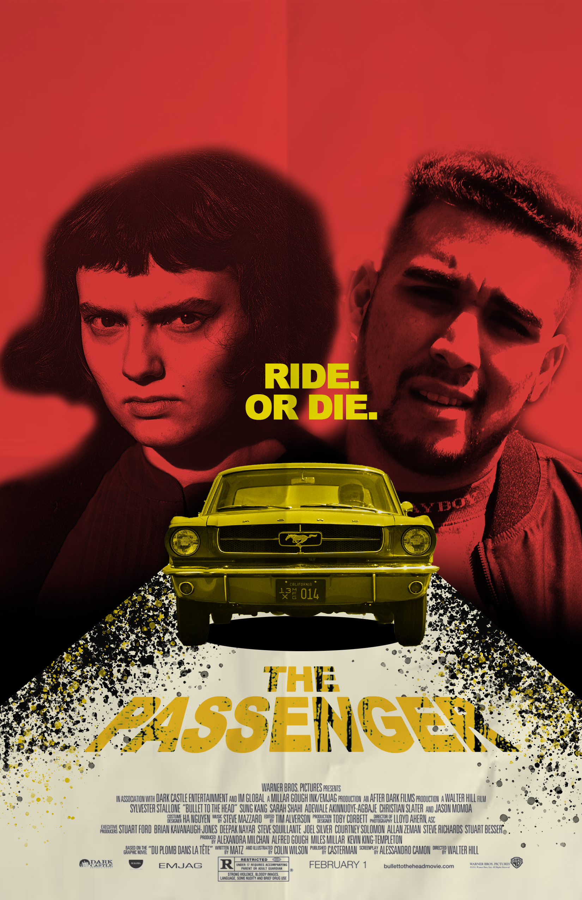

Portfolio
This is a StopMotion video I created using more than 150 pictures.

This is a recreation of the movie poster for The Passenger made with Adobe Photoshop, using layers, color blending and other techniques.
This is a short film I created using Premiere Pro, using layer masking, different angles of recording, narration, and a script.